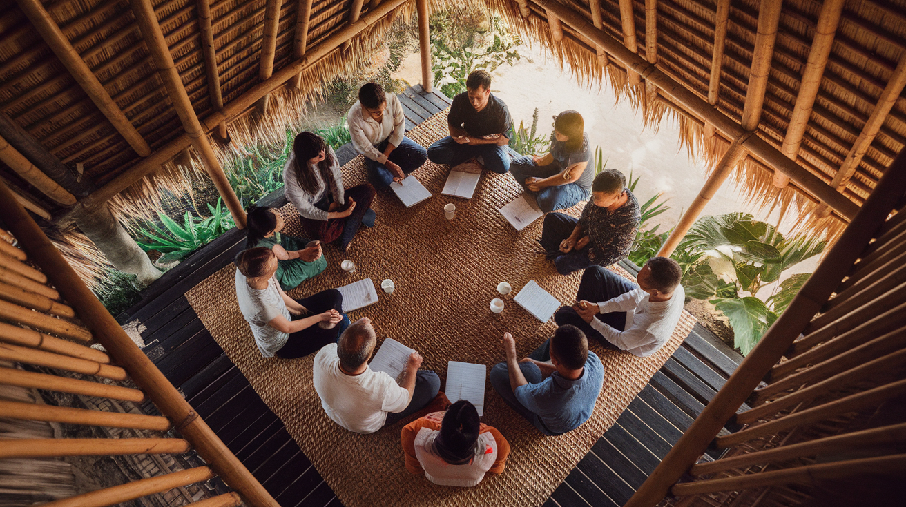

Tentang Kami
About Us
Yayasan Jala Transformasi Indonesia (JATI) adalah yayasan non-profit yang mendampingi dan melengkapi mitra pelayanan di seluruh Indonesia.
Yayasan Jala Transformasi Indonesia (JATI) is a non-profit foundation that mentors and equips service partners across Indonesia.
Visi & Misi
Vision & Mission
Visi
Vision
Terjadinya transformasi secara menyeluruh, utuh, dan berkelanjutan di Indonesia.
Misi
Mission
Memberdayakan Masyarakat untuk mandiri, sejahtera membawa transformasi kepada kehidupan individu, keluarga, komunitas dan bangsa.

Siapa Kami
Who We Are
Yayasan Jala Transformasi Indonesia berdiri secara resmi pada Mei 2024. Gagasan pendiriannya lahir dari kerinduan para pendiri untuk menghadirkan wadah yang dapat memberkati bangsa Indonesia, khususnya dalam bidang sosial, kemanusiaan, dan keagamaan.
Yayasan Jala Transformasi Indonesia was officially established in May 2024. The foundation grew from a shared desire among its founders to create an organisation that truly benefits the Indonesian people — especially in the social, humanitarian, and community development areas.
Kami percaya bahwa perubahan yang nyata dimulai dari dalam — dari pemimpin lokal yang diperlengkapi dengan baik untuk melayani komunitas mereka sendiri. Nama "Jala" mencerminkan jaringan: sebuah jala yang merangkul dan mengangkat bersama.
We believe real change starts from within — from local leaders well-equipped to serve their own communities. The name "Jala" means "net" — a network that embraces and lifts together.
Nilai-Nilai Kami
Our Values
Tidak hanya perubahan fisik, tetapi juga perubahan karakter, kepemimpinan, dan komunitas secara menyeluruh.
Not only physical change, but holistic transformation of character, leadership, and community.
Masyarakat sebagai pelaku pembangunan, bukan penerima pasif. Transformasi dari dalam, bukan dari luar.
Communities as agents of development, not passive recipients. Transformation from within, not imposed from outside.
Sinergi antara masyarakat sipil, pemerintah, swasta, dan komunitas lokal untuk dampak yang lebih besar.
Synergy between civil society, government, private sector, and local communities for greater impact.
Terbuka untuk semua kalangan tanpa diskriminasi, merayakan keberagaman Indonesia.
Open to all without discrimination, celebrating Indonesia's rich diversity.
Transparan dan akuntabel dalam setiap langkah, berorientasi pada dampak sosial bukan keuntungan.
Transparent and accountable in every step, focused on social impact rather than personal gain.
Seperti pohon Jati — tumbuh di kondisi keras, berakar dalam, menghasilkan kayu terbaik. Pertumbuhan yang berkelanjutan, bukan cepat.
Like the Jati tree — growing in harsh conditions, deeply rooted, producing the finest wood. Sustainable growth, not rapid.